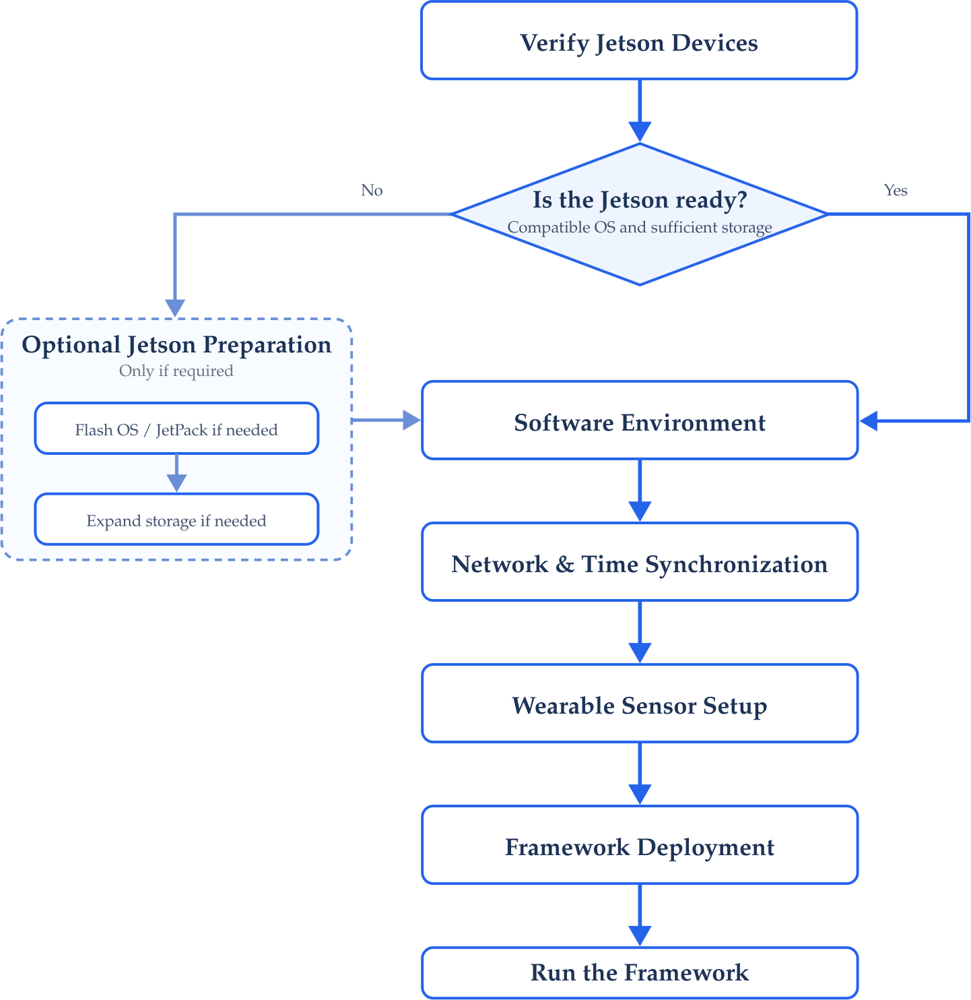

Getting Started
Preparing the HAR Distributed Framework
This section provides the recommended starting point for reproducing and running the HAR Distributed Framework.
It summarizes the resources required to prepare the system and defines the order in which the different components should be configured.
For an explanation of how the distributed architecture works, see the System Overview.
Prerequisites
Before deploying the framework, the following resources are required.
Hardware
| Component | Purpose |
|---|---|
| Wearable inertial sensors | Human motion acquisition |
| NVIDIA Jetson edge devices | Local HAR inference |
| NVIDIA Jetson central device | Prediction synchronization and fusion |
| Local network infrastructure | Communication between computing nodes |
| Storage devices | Operating system, models, software, and experiment logs |
The exact hardware configuration used in the implementation is documented throughout the Setup section.
Software
The distributed system requires a Linux-based NVIDIA Jetson environment together with the software components used for:
- Containerized Execution
- Distributed Communication
- Neural Network Inference
- Sensor Acquisition
- Clock Synchronization
- Experiment Monitoring
The exact software versions and configuration procedures are documented in Software Environment.
Repository
The source code and supporting resources are maintained in:
WearNET/HAR-Distributed-Framework
Clone the repository on the development system using:
git clone https://github.com/WearNET/HAR-Distributed-Framework.git
cd HAR-Distributed-FrameworkThe repository contains the resources required for the distributed implementation, including framework code, configuration files, model-related resources, experimental utilities, and technical documentation.
A detailed repository structure will be provided later in the Framework section where each software component is introduced.
Recommended Setup Order
If the system is being reproduced from unconfigured hardware, prepare the environment in the following order: Steps 1 and 2 are optional; that is, if you need to flash your Jetson and expand the device’s storage, you must do so. Otherwise, if you already have a Jetson running Ubuntu 20.04, you don’t need to do this again.
1. Prepare the Jetson Boards
Install the appropriate NVIDIA Jetson operating environment.
2. Configure Storage
Prepare additional storage when required by the Jetson platform.
3. Configure the Software Environment
Install and configure the runtime components required by the framework.
This includes the container environment, communication middleware, Python environment, and machine learning dependencies.
4. Configure Network and Time Synchronization
Connect the distributed devices to the local network and configure a common time reference between nodes.
5. Configure the Wearable Sensors
Prepare the wearable sensing devices and verify communication with their corresponding edge nodes.
6. Deploy the Framework
Configure the software components responsible for:
- Edge Inference
- Central Processing
- Distributed Communication
- Prediction Synchronization
- Model Deployment
These components are documented under Framework.
7. Run the System
Once the hardware and software configuration is complete, follow the execution procedure provided in:
Setup Workflow
The recommended preparation sequence for reproducing the framework is summarized in Figure 1.

The procedures in the Setup section are primarily intended for initial system configuration.
Once the devices are correctly prepared, normal experiments should begin directly from Running the Framework without repeating the complete installation process.
Verification Before Continuing
Before deploying the framework, verify that:
- All computing devices boot correctly;
- Sufficient storage is available;
- All devices can communicate through the local network;
- The required software environment is installed;
- Wearable sensors can connect to their assigned edge devices; and
- The framework repository is available on the required systems.
Detailed validation commands are provided in the corresponding setup pages.
Next Steps
Continue according to the current state of your system:
- Starting from an unconfigured Jetson: begin with Flashing Jetson Boards.
- Jetson already configured but storage needs preparation: continue with Storage Expansion.
- Hardware already prepared: continue with Software Environment.
- Complete system already configured: go directly to Running the Framework.